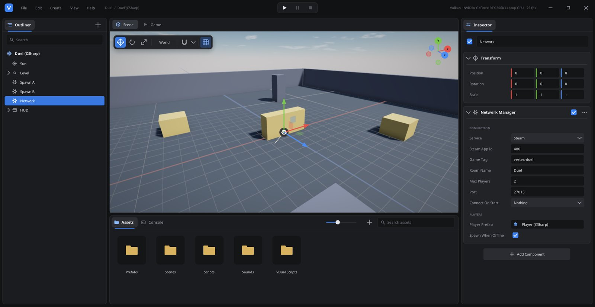

Getting started
Get the engine, open the editor, and play the samples. It takes about five minutes.
What you need
- The .NET 10 SDK (dotnet.microsoft.com/download). Vertex and your games are .NET projects.
- Windows, Linux or macOS, 64-bit (on a Mac, Apple silicon).
- A graphics card with Vulkan, or OpenGL 3.3 or later. Vertex renders with Vulkan where it can and falls back to OpenGL by itself. Macs use OpenGL.
- Steam, only for playing online through Steam. Testing on one PC uses the local network and doesn't need it.
- A code editor for C# is handy (Visual Studio, Rider or VS Code), though the visual scripting route doesn't need one.
Vertex is made on Windows, and its tests run on Linux and macOS too. The Linux and Mac downloads are newer: if something doesn't work there, please open an issue.
Get the engine
Download it and unpack it anywhere. The download has the editor, the engine for games made in code, the samples, and a blank game to start from.
Or build it from source, for the newest changes (you'll need Git too):
git clone https://github.com/BiggyStudios/Vertex.git cd Vertex dotnet build Vertex.slnx
That builds the engine, the editor, the samples and the tests. To check everything works, run the tests (they don't need a window): dotnet test Vertex.Tests and dotnet test Vertex.Editor.Tests.
Either way you get the same Samples folder, so the commands below work in both: run them in the download's folder, or the repository's.
Open the editor
From the download, run Editor\Vertex.Editor.exe on Windows, or ./Editor/Vertex.Editor in a terminal on Linux and macOS. From source:
dotnet run --project Vertex.Editor
The editor opens on a small scene to try things on. Hold the right mouse button and use WASD to fly around, click things to select them, and drag the arrows to move them. The editor guide covers the rest.

Play the samples
The Samples folder has the finished versions of the two tutorials, and a city to walk round:
| Sample | What it is | Run it |
|---|---|---|
| CodeOnly | Coin Grab: a whole game in one C# file, made without the editor. | dotnet run --project Samples/CodeOnly |
| Duel | A 1v1 multiplayer shooter made in the editor, twice: with C# scripts and with visual scripts. | dotnet run --project Samples/Dueldotnet run --project Samples/Duel -- --visual |
| NeonCity | A rainy street at night, lit by neon through volumetric fog, with a night market to walk into. F turns the fog off and on. | dotnet run --project Samples/NeonCity |
To open the duel in the editor, use File › Open Project and pick Samples/Duel/Duel.vertexproject. The editor builds its C# scripts in the background, then opens the C# version's scene. Press Play (or Ctrl+P), click in the game to take the mouse, and Shift+F1 gives it back.
Try the duel with two players on one PC: run two copies with -lan so they use the local network instead of Steam, then press Enter in each. The first hosts and the second joins.
dotnet run --project Samples/Duel -- -lan
Make your own project
In the editor, choose File › New Project and pick where it goes. A project is a folder with:
- a
.vertexprojectfile, which holds its settings (File › Project Settings): its name, the scene it starts in, how often physics steps; - an
Assetsfolder for scenes, prefabs, materials, textures, models, sounds and scripts; - once you write a C# script, a
.csprojfor its code. The editor makes this for you the first time you choose New Script.
A new scene starts with a sun and a camera. Add things from the Create menu, save with Ctrl+S, and press Play.
Next
Make the Duel
A 1v1 shooter, step by step: the editor, prefabs, physics, UI and multiplayer.
C# scripting
Components, input, physics, prefabs and sound from C#.
Visual scripting
Events, flow and variables: behaviour made from nodes.
Rather write a game entirely in code, without the editor? The Coin Grab tutorial does that.